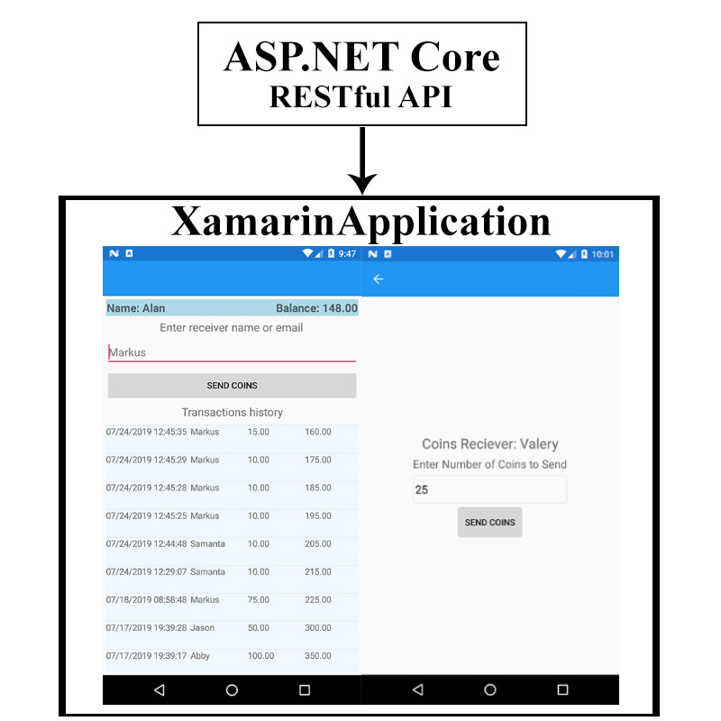
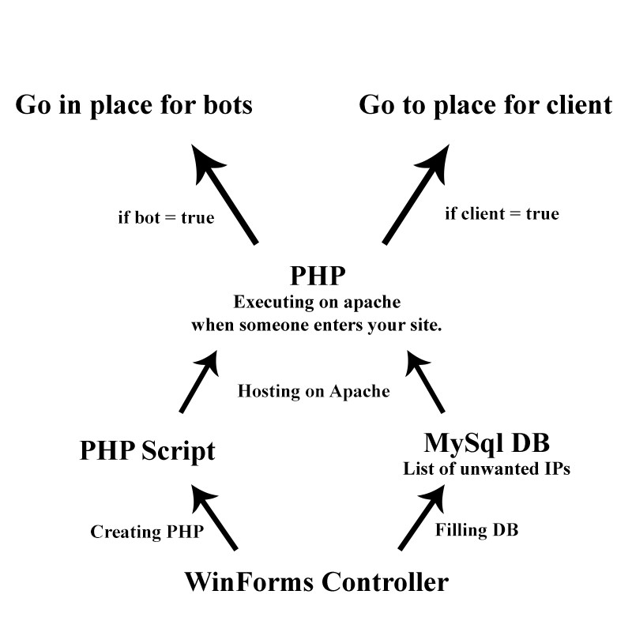

My projects
ASP.NET + Xamarin
Current Application demonstrates a Demmo of a WebWallet wher people can send Coins and recieve Coins from another users. In this solution I didn't put to much effort in fromnt part of Web. Instead focused more on Mobile version of the App. All closed api methods uses a Token Authentification system.

C# + PHP Inet Traff Controller
Basically this application controls incoming traffic to your web page from any source, and if IP of incoming person in blacklist table inside of your MySQL DB that it goes on a page that you provided for bots, and if it is not a bot it goes to your white web page. The scheme explains better how it actually works.
